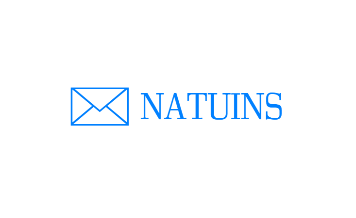

Natuins va ser una red social donde la gente va a poder interactuar con otras personas. Se van a poder escribir mensajes, colgar videos, subir imágenes, seguir a gente, permitir quién quieres que vea tu cuenta, etc..
También podrás buscar a gente y mensajes mediante un buscador, cosa que será muy útil si quieres encontrar algo rápido. Se podrán marcar mensajes como favoritos y almacenarlos dentro de tu perfil.
Habrá una posibilidad de crear grupos de amigos para poder mandarse mensajes entre ellos sin necesidad de que lo vean otras personas.
En la siguiente página de detalles explicaremos con más profundidad las funcionalidades y los tipos de usuarios que habrá dentro de la aplicación web.
En la pestaña de bocetos mostramos como será la página web visualmente.
Dentro de miembros mostraremos información sobre los integrantes del grupo.
En la planificacion haremos una programación intuitiva de como vamos a organizar el proyecto.
Dentro de contacto habrá un formulario para que los usuarios hagan feedback.
